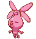
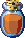
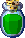
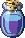
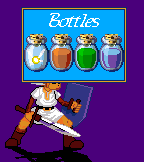
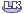
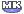
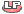

LINK FOR MUGEN - VERSION 0.95
~ THE BOTTLES ~
During the game, Link will be able to use bottles. For those who already know Zelda, the idea is globally the same. For those who doesn't know well the Zelda's unverse, here are some additional explanations.
The bottles are special objects. Lonely, there are useless. So, you need to fill them with particular content. Link for Mugen uses 4 different contents :
-
The Fairy :

It's an extremely precious content. If you use it right in battle, the fairy will restore 30% of your life, and remove one power level (if you have less than one power level, you still can use the fairy : all your power will be removed). If you use the fairy when you have lost less than 30% of your life, the fairy will only restore you what you've lost (so, you can't have more life than at the beginning of the fight). Vous can't use the fairy if your life is at its maximum level (a sound will warn you if you try). But its real usefulness isn't here : if you ever KO'ed by your opponent, then the fairy will itself go out of the bottle, and will use its power to revive you, also restoring you 30% of your life, and using one power level. Plus, the lost round's penalty won't be applied until you haven't fairy anymore to revive you.-
The Life Potion :

This potion restore your 50% of your complete life. However, contrary to the fairy, if you're KO'ed, owning of a Potion Life won't revive you. So, you must use this potion BEFORE being KO'ed. If you use the Life Potion when you have lost less than 50% of your life, the Potion will only restore what you've lost (so, you can't have more life than at the beginning of the battle). You can't use the Life Potion if your life is at its maximum level (a sound will warn you if you try).-
The Mana Potion :

This potion restore 2 power levels on the 3 Link can have. If need less than 2 power levels to fill your power bar, the potion will only restore you what is missing (you can't have more than 3 power levels). You can't use the Mana Potion if your power is at its maximum (a sound will warn you if you try).-
The Total Potion :

This potion is a combination between the Life Potion and the Mana Potion. It restores you 25% of your total life, and 1 power level. As for the other potions, the Total Potion doesn't allow you to restore your life or your power beyond their maximum levels. Vous can't use the Total Potion if the two bars of life and power are together at their maximum level (a sound will warn you if you try). However, if only one of the bars is at its maximum level, you can use this potion to fill the other bar. As for the Life Potion, the Total Potion won't revive you if you're KO'ed. So, you must use it while you're still alive.
It isn't possible to buy one of these contents if you don't own at least one empty bottle. So, before being able to buy a content, you must buy an empty bottle, or empty a full bottle previously bought (if possible, according to your customization's parameters - see the Customization section for more details). Link for Mugen can have, like in most Zelda games, up to 4 bottle, and so, 4 contents. You're free to fill each bottle as you want : so you can have 4 bottles with 4 different contents, or 4 bottles with 4 identical contents, all is possible.
The bottles are filled in order, from the left to the right. When you buy a content, it fills the first free empty bottle.
Once a bottle is filled, you can't change its content. Thus, to empty a full bottle, you firstly need to use its content (and the infinite bottles must be disabled - cf. Customization). Then, as it's empty again, you'll be able to fill it anew with a new content (different or not from the older) the next time you'll access to the shop.
At any time in the battle, you'll be
able to see your bottles' status (number of bought bottles and their
contents) by pressing
or
during
Link's Taunt (triggered with the
 button). Then, the game turns into pause and the bottles appear in a menu.
The bottles are bought in order, from the left to the right; until a bottle
appears in the info screen, it means you don't own this bottle. To close the
menu, just press any key.
button). Then, the game turns into pause and the bottles appear in a menu.
The bottles are bought in order, from the left to the right; until a bottle
appears in the info screen, it means you don't own this bottle. To close the
menu, just press any key.

If you use the infinite bottles (cf. Customization), the bottles that have been already used during this match (and so, which can't be used anymore until the next match) appear by transparency in the menu, like the third bottle in this image :

At any moment of the battle, you can
use the bottle you want (only if you have bought it) by pressing the related
button during Link's Taunt (triggered with the
 button). The concerned bottle will appear above Link, will empty while
producing its effects, and will become translucent before disappearing.
Here's the connection between the buttons and the bottles :
button). The concerned bottle will appear above Link, will empty while
producing its effects, and will become translucent before disappearing.
Here's the connection between the buttons and the bottles :
-
Bottle 1 : Button

-
Bottle 2 : Button

-
Bottle 3 : Button

-
Bottle 4 : Button
For the revival, you don't have anything to do : the fairy will automatically go out of its bottle once you're lying down, KO. This also means that you can't avoid a fairy to revive you.
In some cases, you won't be able to use the bottle :
-
Call of a non-existent bottle : for instance, you try to use the 4th bottle ( button) when you only have 3 bottles.
-
Useless call of a bottle : for example, you try to use a bottle containing Life Potion (or a fairy) when your life is already at maximum (ditto for a Mana Potion when your power is at maximum).
-
Call of an infinite bottle which has been already used in this match : with the infinite bottles, you can use each bottle only once per match. Check the Bottles Menu to see which bottles are still available !
NB : Concerning the Total Potion : the Total Potion won't be used if, and only if, your life AND your power are together at maximum. If one of them is lowered, then the Total Potion will produce its effect only on the bar wich isn't at maximum.
NB 2 : If you lose a match and you decide to continue, your bottles' status will stay the same (those which were empty will stay empty, and those which were filled will keep their content).
~~~~~~~~~~~~~~~~~~